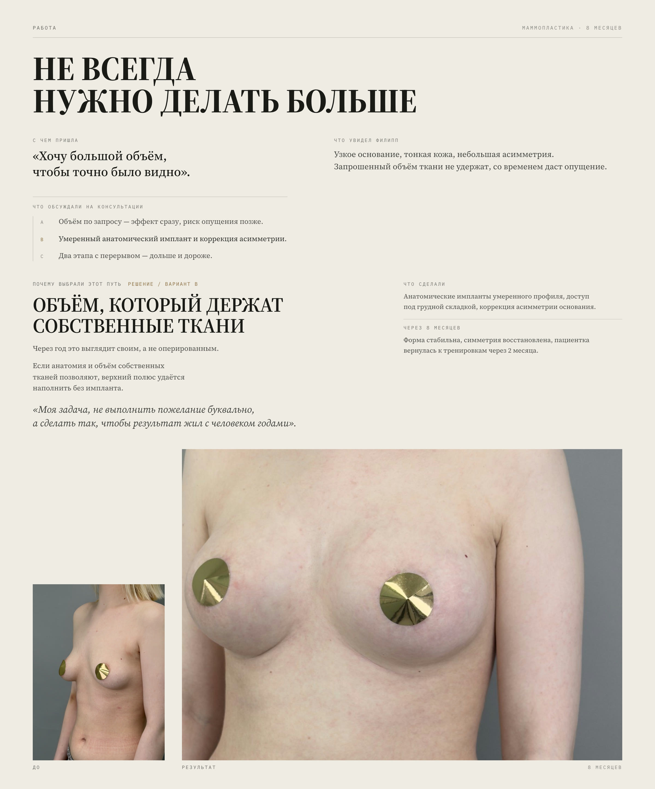
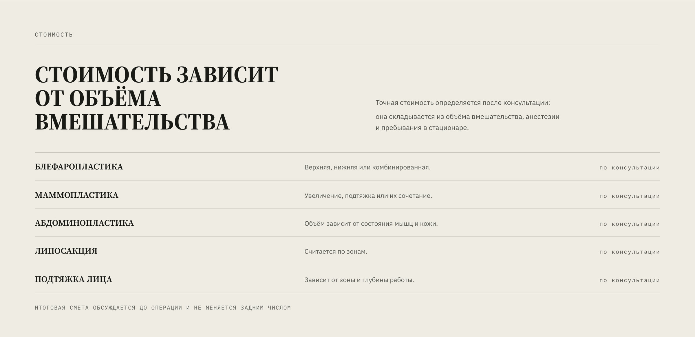
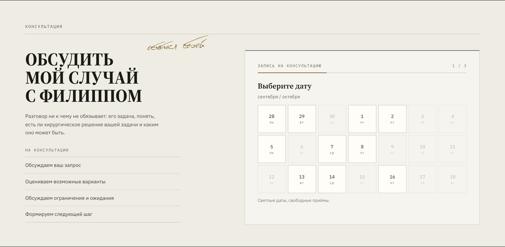
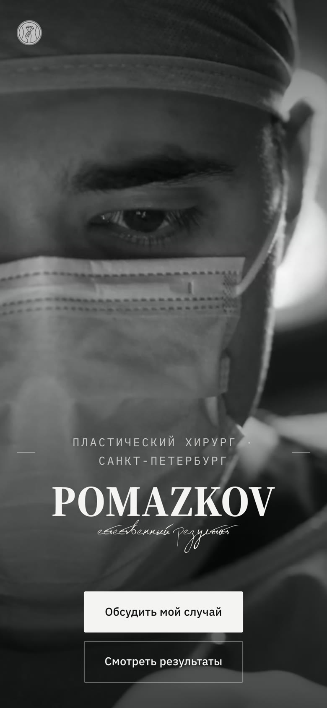
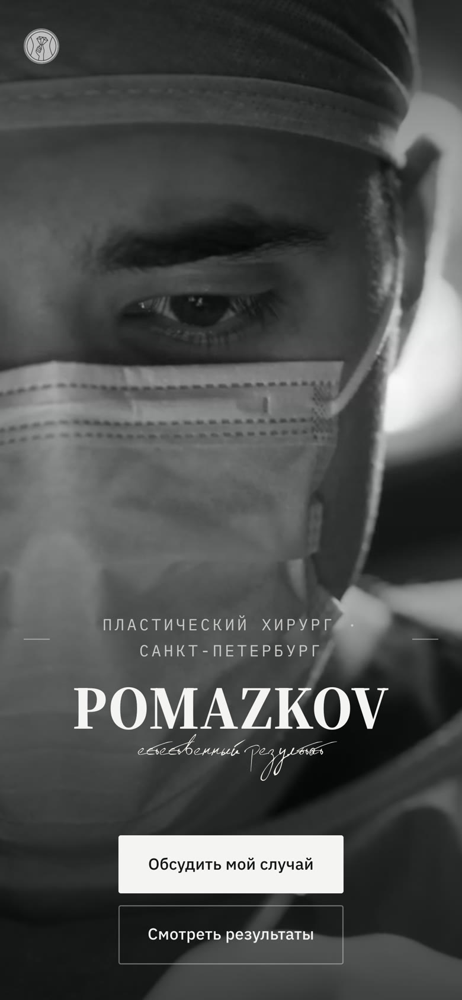
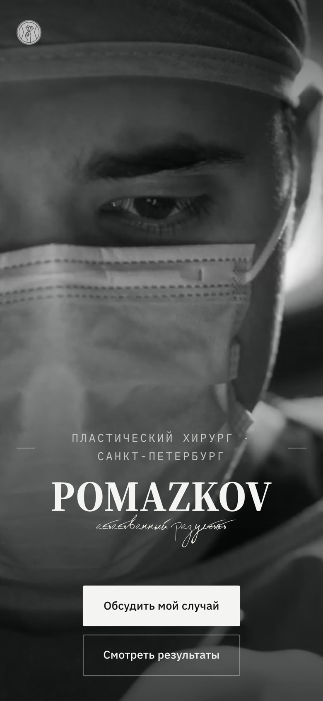
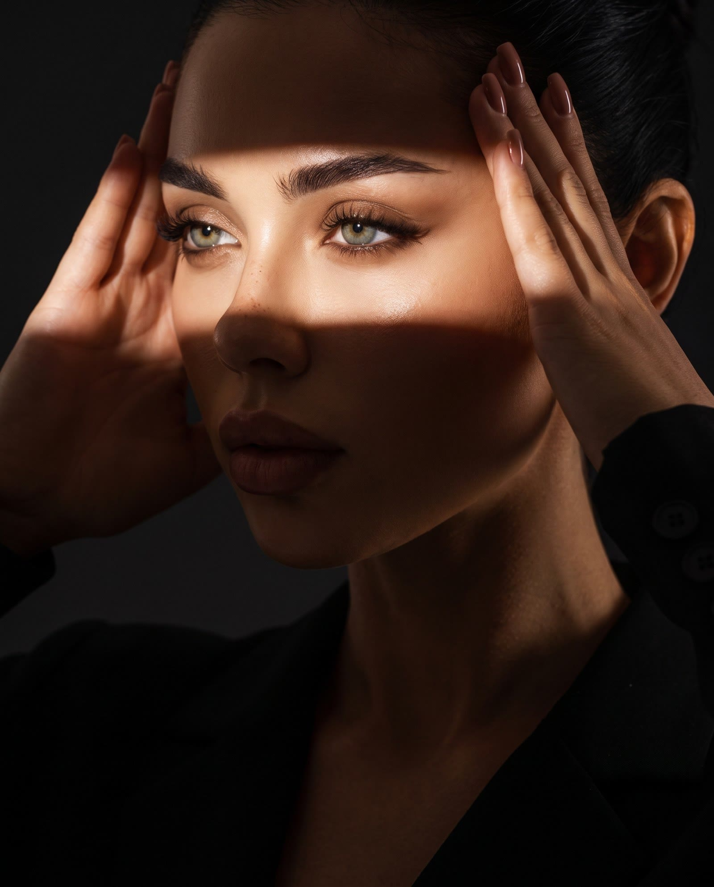
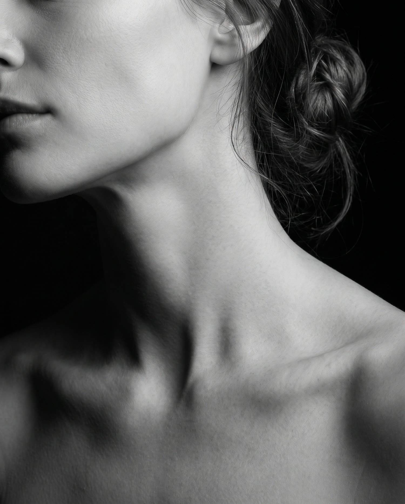
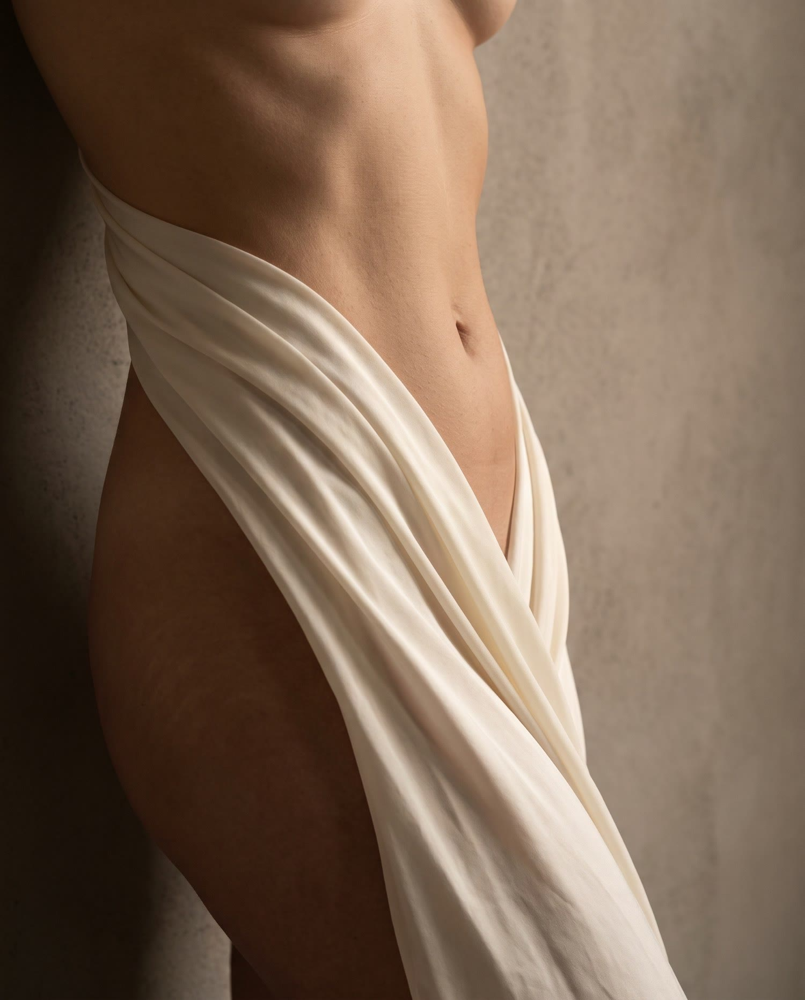
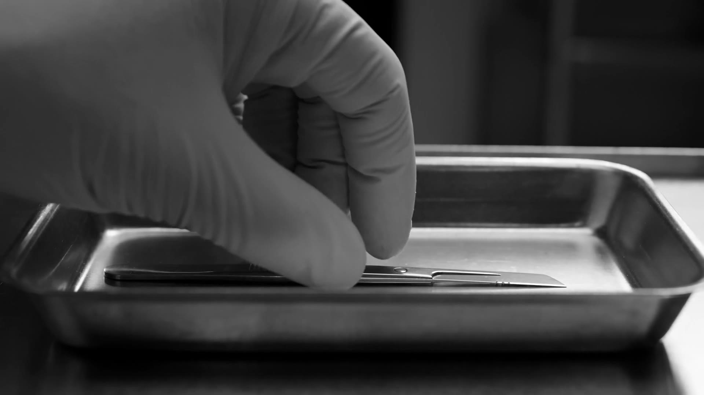

Pomazkov
естественный результат
01 (задача)
Хирурга выбирают не по прайсу
Человек ищет того, кому можно доверить своё тело. Сайт должен был снять три главных страха и довести до консультации без давления.
- «Сделают неестественно»Страх перекачанного, «оперированного» вида.
- «Не понимаю, что меня ждёт»Операция пугает, потому что про путь до и после никто не рассказывает.
- «Неловко спросить»Звонок в клинику с интимным вопросом — высокий барьер.
02 (strategy) позиционирование
Чувство
меры.
«Моя задача — не выполнить пожелание буквально, а сделать так, чтобы результат жил с человеком годами».
Филипп Помазков
Вместо «сделаем больше и ярче» — «естественный результат». Хирург, который может отговорить от лишнего, вызывает больше доверия, чем обещания.
03 (ux) навигация
Вход через запрос, а не через каталог
Пациент не думает терминами. Он думает о себе. Поэтому первый выбор на сайте — человеческая фраза, а под ней уже название операции.
- Хочу более открытый взгляд 01
- Хочу изменить грудь 02
- Хочу изменить форму живота после родов 03
- Хочу скорректировать контуры тела 04
- Хочу омолодить лицо, но остаться собой 05
04 (content) кейсы
Не витрина «до/после», а ход мысли
Каждый кейс построен как история решения: с чем пришла пациентка → что увидел хирург → какие были варианты → почему выбрали этот путь → что получилось через 8 месяцев. Посетитель видит не только результат, но и то, как Филипп думает.
Объём по запросу: эффект сразу, риск опущения позже
Умеренный анатомический имплант и коррекция асимметрии
Два этапа с перерывом: дольше и дороже

05 (visual) подход
Форма из света
06 (journey) путь пациента
Операция — только одна из семи точек
Страх рождается из неизвестности. Поэтому на сайте показан весь путь: от консультации до контроля результата, с живыми деталями — например, что список анализов действует 10 дней.
- 01Консультация
- 02Решение
- 03Подготовка
- 04Операция
- 05Первые дни
- 06Восстановление
- 07Контроль результата
07 (trust) цена
Честно: «по консультации»
Цены на операции нельзя назвать заранее, и сайт этого не скрывает. Зато объясняет, из чего складывается стоимость, и обещает главное: итоговая смета обсуждается до операции и не меняется задним числом.

08 (conversion) запись
Запись без форм
Пациент выбирает дату, время и тему разговора, и сайт открывает Telegram с готовым сообщением. Не нужно звонить и объяснять вслух интимный вопрос. Сайт при этом не собирает персональных и медицинских данных: всё остаётся в личной переписке.

09 (responsive) мобильная версия
Большинство пациентов приходят с телефона



10 (visual) визуальный язык
Графит, свет и кожа




графит
свет
кожа
золото
11 (website) сайт целиком
12 (result) результат
Сайт, которому доверяют
…Филипп Помазков · голосовой отзыв